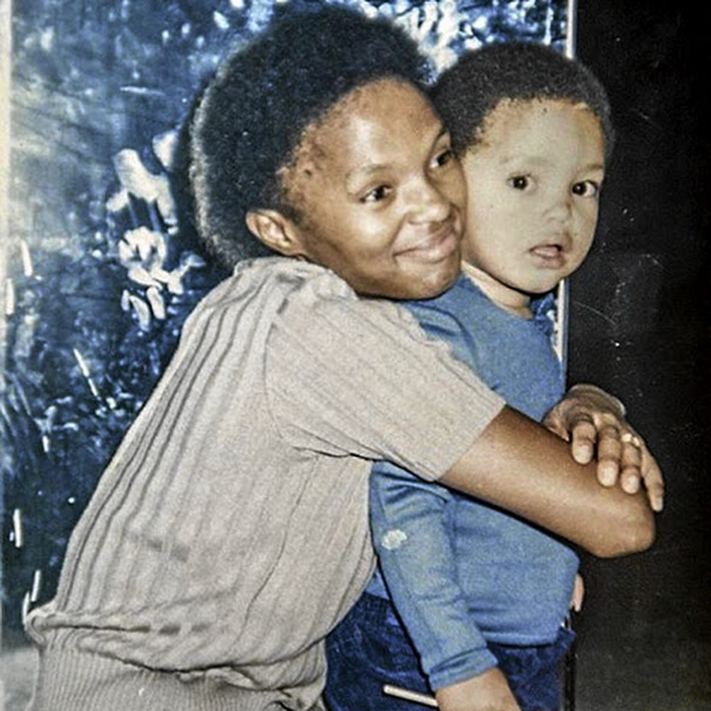
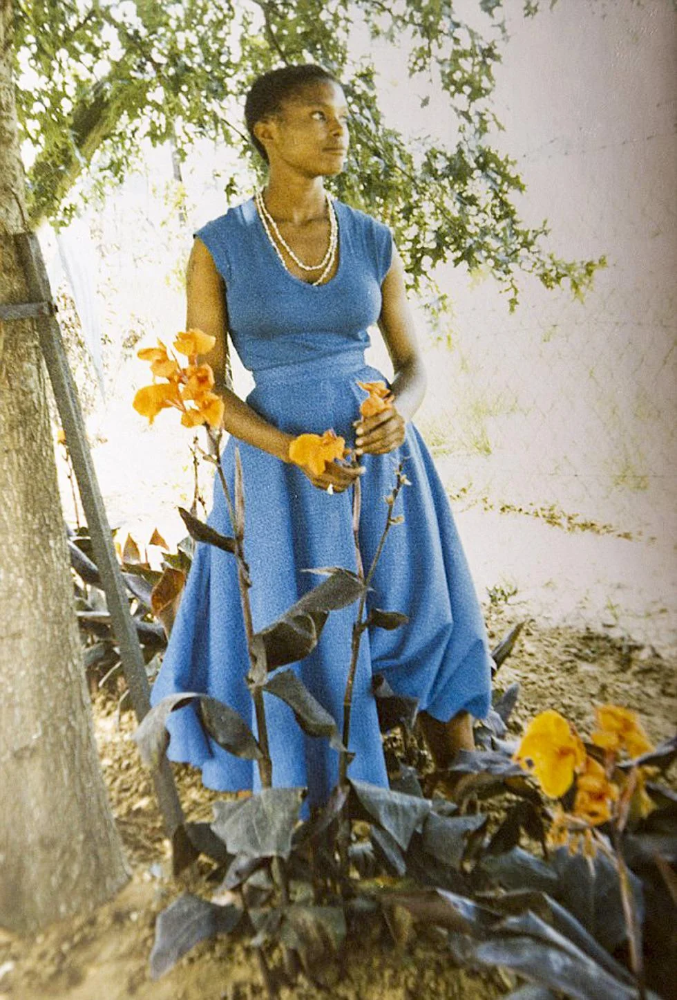

Noah's mother Patricia played a pivotal role in Noah's life, the way he behaved and lived.
Patricia made sacrifices -many- for her son Noah. Even though she faced numerous
hardshipds like poverty and violence, she always struggled to give Noah a good life, she
desciplined Noah but showered him with endless love. Patricia made sure that her son knew
more than one language because she believed communication was the key and especially in a place
like Apatheid where people of color were being descrimanted since they had no belonging not either
to black community nor white. Atleast Noah knowing different languages made people around him
feel safe
and more welcoming to him and it gave Noah a sense of belonging, Patricia also instilled a sense of
morality
in Noah which helped him grow up without being violent even thou he faced violence.
In the book Noah also talks about how his resilient mother (Patricia) influenced his outlook on
life.
Despite of theoppression of Arpetheid environment, Patricia tought him to find humor and hope in
difficult
situations.
"My mother; A life of love and resiliend" would be my time for Born a crime because the book
consistently
came around Patricia, her life and how her love and resilience shaped Noah to be who he was today
by discipling
him but also making sure she gave him all she had to make Noah have a good life and also survive in
Apartheid.


The Quote
"Abel wanted a traditional marriage with atraditional wife...
but he never in love with subservient women ... He only wants
a woman who is free because his dream is to put her in a cage.
The quote talks about Abel's desire for a traditional marriage with a traditional wife while attracted to
independent women. It shows how menwant partners who embodies traditonal feminity while also being attracted
to independent women.
As traditional roles indicated that men should be dominant and providers while women are expected to be submissive
to the men, but in today's world there implications are being are being challenged. Modern women seek equality in
relationships;wanting partners who respect their independence and ambitions.
As much as women want to be independent, men want to have contol over them which was defined as "Desire to put he in
a cage". This conflicts men's traditional desire where women are expected to be submissive with modern relationships
where men get attracted to partners who challenge them and contribute to the relationship equally.
Concluding the quote relates to today's world where men are attracted to medern independent women but also conflicts
with men's desire for control where they want submissive women.
While today's relationships are expected to be 50/50 - men and women put the same effort-, when it comes to marriage
men's desire for control comesin; they want totake it the traditional way by expecting their wivesto be submissive for
example being house wives while forgeting they never married a traditional wife in the first place. Thats what leads
to today's marriages ending up in divorce now and then.
Trevor Noah is one of the most successful comedians in the world and was the host of the Emmy® Award-winning “The Daily Show”
on Comedy Central for seven years. Under Trevor, “The Daily Show with Trevor Noah” broke free from the restraints of a 30-minute
linear show, producing engaging social content, award-winning digital series, podcasts and more for its global audience. Last year,
“The Daily Show with Trevor Noah” landed a record number of seven Emmy Award nominations.
Trevor is the author of the #1 New York Times bestseller “Born a Crime: Stories from a South African Childhood” and its young readers
adaptation, released in 2019, “It’s Trevor Noah: Born a Crime: Stories from a South African Childhood,” which also debuted as a New York
Times bestseller. The Audible edition of “Born a Crime,” performed by Trevor, was produced by Audible and remains one of the top-selling,
highest-rated, and most-commented-on Audible performances of all time. To date, “Born a Crime” has sold over 3 million copies across all
formats.
Trevor has written, produced, and starred in 12 comedy specials, including Emmy-nominated “I Wish You Would,” his third for Netflix, which
premiered globally in November 2022. True to form, Trevor hilariously shares revelations about learning to speak German, modern communication,
and his love for curry. His previous special, “Trevor Noah: Son of Patricia” received a NAACP Image Award for Outstanding Variety Show, as well
as a Grammy Award nomination.
In 2018, Noah launched the Trevor Noah Foundation to improve equitable access to quality education for underserved youth in South Africa. Noah's
vision is a world where education enables youth to dream, see
and build the impossible.